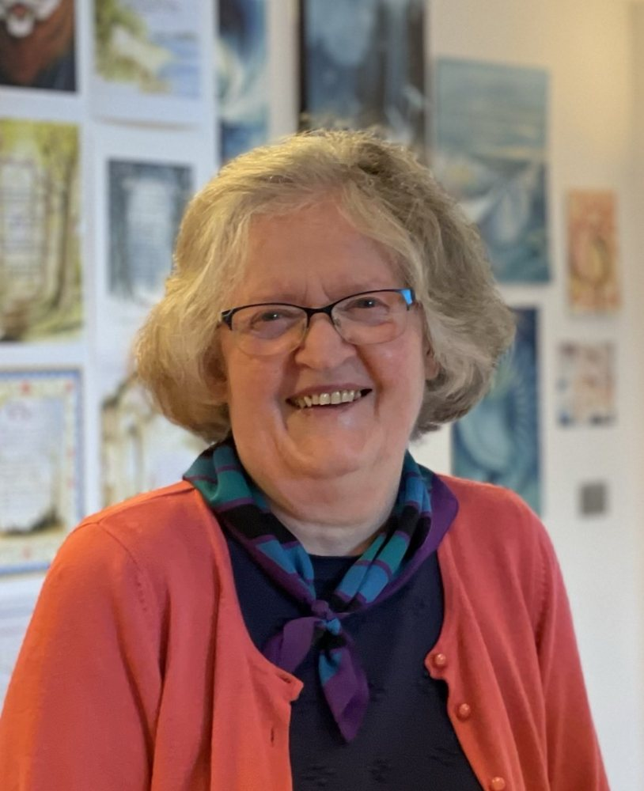

Paintings and drawings, [earliest surviving year] to now
Over more than sixty years, Joan Mullins has worked across a remarkable range of subjects and styles, from closely observed landscapes and botanical studies to intricate compositions drawn entirely from imagination. These galleries bring together the different strands of a lifetime’s painting.
The galleries



About Joan
Born in Bulawayo, in what was then Rhodesia, Joan studied English literature and fine art at the University of Natal, graduating in 1963.
Most of the work shown here dates from after she settled in England in 1979. Much of what she made before then was sold, lost or left behind in moves between Rhodesia, South Africa and Ireland, though a few earlier pieces survive. [Joan to OK this line]
Read her storyAsk about a painting
Prices are shown with each painting. To buy one or arrange to see it, get in touch with Joan.